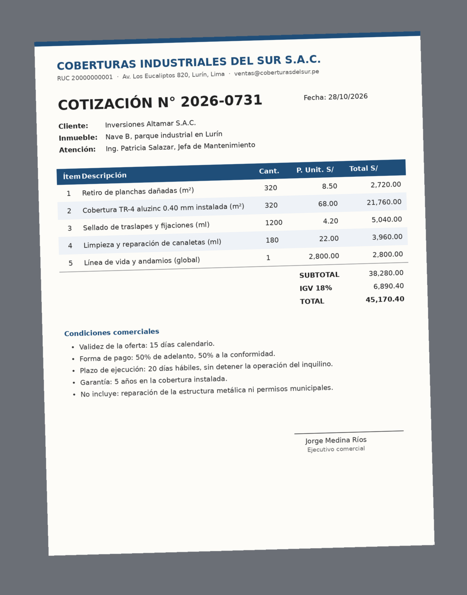

Haiku
El asistente veloz
El más rápido y económico. Brilla en tareas cortas, repetitivas y de mucho volumen.
Clasificar 300 solicitudes de inquilinos por tipo y urgencia.
SESIÓN 2 · LABORATORIO PRÁCTICO
Ocho misiones sobre el trabajo real de una empresa que invierte en oficinas, locales y naves industriales y los alquila: evaluar inversiones, controlar contratos, cobrar, mantener los inmuebles, negociar renovaciones y reportar al directorio. Cada misión te deja algo que funciona. Al terminarla, márcala y se encenderá un piso de la torre.
Haz clic en un piso para ir a su misión
Ten esto listo antes de la primera misión. Tus marcas se guardan en este navegador.
Una empresa que invierte en inmuebles y los alquila hace mucho más que cobrar una renta. Evalúa qué comprar, coloca los espacios, firma y renueva contratos, cobra, mantiene oficinas y naves, cuida a sus inquilinos y reporta a sus accionistas. Estas son las preguntas de cada etapa y dónde las vas a practicar.
¿Qué inmueble conviene comprar para alquilar?
Las oficinas clase A en Lima tenían 8.6% de disponibilidad en el segundo trimestre de 2026, con una renta pedida promedio de US$ 16.5/m². Gestión, con datos de Cushman & Wakefield
Misiones 1 y final
Colocar rápido los espacios vacíos.
En oficinas clase A se absorbieron 35,076 m² en el primer semestre de 2026, y cerca del 40% de lo que está en construcción ya está prealquilado. Gestión
Misiones 5, 7 y final
Que el contrato proteja de verdad al arrendador.
El desalojo con intervención notarial solo procede si el contrato cumple los requisitos de la Ley 30933. Un contrato privado sin las cláusulas adecuadas deja fuera esa vía. El Peruano
Misiones 2 y 6
Cobrar a tiempo y no perder reajustes.
Un vencimiento o un reajuste olvidado se paga con meses de renta. Con varias naves y oficinas, el control en hojas sueltas no alcanza.
Misiones 2 y 4
Techos, pisos y pistas sin frenar al inquilino.
Cada licitación de mantenimiento exige comparar cotizaciones, revisar cifras y elegir proveedor con criterios claros.
Misión 3
Retener al inquilino en cada renovación.
Los almacenes de Lima cerraron 2025 con 11.5% de vacancia y una renta pedida de US$ 6.4/m². El inquilino compara y negocia. Energiminas, con datos de Cushman & Wakefield
Misiones 1 y 7
Decidir con números claros ante el directorio.
Ocupación, cobranza y rentabilidad por inmueble, en un tablero que cualquiera entienda en un minuto.
Misiones 4 y final
Claude es el asistente de IA Generativa de Anthropic. Tiene tres modelos con perfiles distintos, y elegir bien ahorra tiempo y límite de uso.
El asistente veloz
El más rápido y económico. Brilla en tareas cortas, repetitivas y de mucho volumen.
Clasificar 300 solicitudes de inquilinos por tipo y urgencia.
El analista senior
Equilibrio entre calidad y velocidad. Es el modelo para el trabajo de todos los días.
Responder a un inquilino molesto con la política de mantenimiento a la mano.
El socio experto
El más profundo. Para decisiones con varios supuestos, cálculos encadenados y criterio.
Evaluar si conviene comprar un local alquilado y qué preguntar antes de ofertar.
Elige una tarea y mira la recomendación.
La recomendación aparecerá aquí.
Regla práctica: empieza con Sonnet, sube a Opus si no basta y baja a Haiku si la tarea es repetitiva. Por encima existe Fable, el modelo tope de Anthropic, en planes de mayor nivel.
| Plan | Precio (USD, sin impuestos) | Lo principal |
|---|---|---|
| Free | Gratis | Sonnet y Haiku, uso limitado, hasta 5 proyectos |
| Pro | 20 al mes (17 con pago anual) | Opus, más uso, proyectos ilimitados, Research |
| Max | 100 al mes | 5 veces el uso de Pro, incluye Fable con límites |
| Ultra | 200 al mes | 10 veces el uso semanal de Pro |
| Team | 25 por persona (20 con pago anual) | De 2 a 150 personas, administración central, SSO, sin entrenamiento con tus datos por defecto |
| Enterprise | 20 por persona, anual, más el uso | Desde 20 personas, auditoría, control de retención de datos |
Fuente: claude.com/pricing, consultado en noviembre de 2026. El uso se mide en ventanas de 5 horas y límites semanales. Opus consume más límite por mensaje que Sonnet.
Imagina un practicante brillante que no conoce la empresa. Antes de empezar te preguntaría cinco cosas. Escríbelas aquí y mira cómo se arma tu prompt.
0 de 5 ingredientes
Empieza a escribir en los campos de la izquierda.
Ingrediente extra: uno o dos ejemplos de lo que esperas enseñan tu criterio mejor que un párrafo de instrucciones. Lo usarás en la misión 1.
Van de menor a mayor dificultad y recorren la cadena del negocio. La última une todo en un solo flujo: investigar, analizar, visualizar, presentar y defender una decisión.
Escala ilustrativa para comparar perfiles, no una medición.
Qué te llevas: criterio para elegir el modelo correcto según la tarea, probado con tus propios ojos en tres situaciones de la empresa.
Clasifica cada solicitud de inquilino en una categoría (Mantenimiento, Facturación y cobranza, Contrato y renovación, Seguridad, Áreas comunes, Otros) y una urgencia (Alta, Media, Baja). Devuelve una tabla con N°, Inmueble, Categoría y Urgencia. Al final, cuenta cuántas hay por categoría. Ejemplos de cómo clasifico: - "Se cayó una plancha del techo sobre la zona de carga" = Mantenimiento, Alta - "¿Me pueden reenviar la factura de octubre?" = Facturación y cobranza, Baja SOLICITUDES: 1. Nave A Lurín: la puerta enrollable del andén 3 no sube. 2. Oficina piso 8: el aire acondicionado de la sala de directorio no enfría. 3. Almacén Callao: queremos saber si podemos ampliar el contrato a 5 años. 4. Nave B Lurín: hay goteras sobre la zona de racks. 5. Local Surco: la factura de octubre tiene mal el RUC. 6. Oficina piso 3: el ascensor se detiene entre pisos. 7. Nave Chilca: necesitamos una adenda para subarrendar parte del área. 8. Oficina piso 11: piden cotización para alquilar el medio piso vacío. 9. Nave A Lurín: la pista de ingreso tiene huecos y dañan los camiones. 10. Local Surco: el vigilante nocturno no llegó ayer. 11. Oficina piso 8: ¿cuándo se aplica el reajuste de la renta? 12. Nave B Lurín: el tablero eléctrico huele a quemado. 13. Nave Chilca: no nos llegó la constancia de pago de la garantía. 14. Oficina piso 3: las luces del estacionamiento no encienden. 15. Almacén Callao: un postulante pregunta por visitas al almacén. 16. Nave A Lurín: se activó la alarma contra incendios sin motivo. 17. Oficina piso 11: el inquilino avisa que no renovará. 18. Nave B Lurín: el desagüe del baño de operarios está atorado. 19. Local Surco: piden permiso para cambiar el letrero de fachada. 20. Nave Chilca: la cerca perimétrica tiene un tramo caído. 21. Oficina piso 8: la cerradura de la puerta principal falla. 22. Nave A Lurín: piden una copia del contrato firmado. 23. Oficina piso 3: hay olor a humedad en el depósito. 24. Nave B Lurín: el agua del techo mojó mercadería esta mañana.
Actúa como jefe de relación con inquilinos de una empresa que alquila naves industriales. Responde este correo. CORREO: "Por tercera vez en el mes hay filtraciones en el techo de la Nave B en Lurín. Esta mañana se mojaron 40 pallets de mercadería. Si no lo resuelven esta semana, vamos a descontar los daños de la renta y evaluar no renovar el contrato. Martín Salas, Gerente de Operaciones, Logística Andina" LO QUE SABEMOS: - El mantenimiento del techo está a nuestro cargo. - El cambio de cobertura ya está cotizado y puede empezar en 10 días. - Los daños a la mercadería se evalúan con el seguro, no se descuentan de la renta. - Su contrato vence en 3 meses y es un inquilino importante. FORMATO: correo de máximo 160 palabras, con asunto, una disculpa concreta, la solución temporal para esta semana, la fecha de inicio del cambio de techo y un contacto directo. REGLAS: no aceptes descuentos de renta ni responsabilidad por daños antes de evaluarlos. No culpes al inquilino. Cuida la relación pensando en la renovación.
Actúa como gerente de inversiones de una empresa que compra inmuebles para alquilarlos. Nos ofrecen este activo: - Local comercial en una avenida principal de Santiago de Surco, 420 m². - Precio pedido: US$ 2,100,000. - Inquilino actual: una agencia bancaria, con contrato que vence en 4 años. - Renta actual: US$ 13,000 al mes, sin reajuste pactado. - Gastos no recuperables estimados: 7% de la renta. Necesito: 1) La rentabilidad de entrada (NOI anual sobre precio) y qué pasa si al vencer el contrato el local queda vacío 6 meses. 2) Qué supuesto mueve más el resultado. 3) Los 5 riesgos principales. 4) Las 8 preguntas de due diligence que haría antes de ofertar. 5) Tu recomendación en 3 líneas: ¿ofertamos, negociamos el precio o descartamos? Muestra tus cálculos y marca los datos del vendedor que deben verificarse.
Lo haces tú Lo hace Claude
Así se ve la entrevista
Y esta es la app que puede salir. Mueve la fecha de corte
Contratos inventados para el demo.
Qué te llevas: una herramienta interna para que no se pase ningún vencimiento, renovación ni reajuste de renta de los contratos de arrendamiento, diseñada como lo haría un analista: primero entender el proceso, después construir.
Quiero crear una herramienta interna para una empresa que alquila oficinas, locales comerciales y naves industriales en Lima. Hoy controlamos los contratos de arrendamiento en hojas sueltas y a veces se nos pasa un vencimiento o un reajuste de renta. Actúa como analista de procesos. Antes de construir nada, entrevístame: hazme preguntas una por una, máximo 6, para entender quién la usará, qué datos tenemos de cada contrato, qué alertas necesitamos, qué indicadores quiere ver la gerencia y en qué formato. Cuando tengas suficiente información, resume lo que entendiste en una ficha de requisitos con: usuarios, datos de entrada, reglas de alerta, indicadores y diseño. Espera mi confirmación antes de construir.
Confirmo la ficha. Ahora construye la herramienta como un artifact interactivo, todo en español. Cárgala con 8 contratos de ejemplo inventados (oficinas, locales y naves industriales en distintos distritos de Lima) para poder probarla. Debe permitir agregar y editar contratos, y explicar en una línea cada regla de alerta.
Agrega un botón que genere el borrador de la carta de aviso de renovación para el contrato seleccionado. Luego dime qué otra mejora harías para que Legal y Finanzas la usen cada semana.

| B · Descripción | C · Cant. | D · P. unit. | E · Total | |
|---|---|---|---|---|
| 2 | Retiro de planchas dañadas | 320 | 8.50 | 2,720.00 |
| 3 | Cobertura TR-4 aluzinc | 320 | 68.00 | 21,760.00 |
| … | … | … | … | … |
| 7 | Subtotal | ¿? | ||
| 8 | IGV 18% | ¿? |
Con fórmulas, cualquier persona puede revisar de dónde sale cada número antes de aprobar el pago. El subtotal real lo descubrirás en la hoja Verificación.
Qué te llevas: un Excel descargable armado desde la foto de una cotización de mantenimiento, con fórmulas vivas y una hoja que verifica los números del proveedor.
Actúa como analista de mantenimiento de una empresa que alquila naves industriales. A partir de la foto de esta cotización, crea un archivo Excel descargable con dos hojas: 1) "Partidas": Ítem, Descripción, Cantidad, Precio unitario y Total. El Total de cada fila, el Subtotal, el IGV de 18% y el Total final deben ser FÓRMULAS de Excel, no números escritos. 2) "Verificación": compara el subtotal, el IGV y el total que figuran en el documento con los que resultan de las fórmulas. Muestra la diferencia en soles y resalta en rojo cualquier fila donde no coincidan. Después del archivo, explícame en 3 líneas si la cotización está bien calculada y qué le falta para comparar con otros proveedores.
Ejemplo: un almacén de 2,500 m² valorizado en S/ 9,900,000, con S/ 7,800 de gastos al mes.
Qué te llevas: un tablero de ocupación, cobranza y rentabilidad por inmueble, listo para el directorio.
Actúa como analista financiero de una empresa que alquila oficinas, locales y naves industriales. Con el Excel adjunto, crea un dashboard interactivo para el directorio. Calcula para cada inmueble: ocupación, porcentaje de cobranza del mes, NOI del mes (renta facturada menos gastos operativos) y rendimiento anualizado sobre su valor. El dashboard debe tener: - Arriba, 4 indicadores de la cartera: renta facturada, porcentaje cobrado, ocupación total y NOI del mes. - Un gráfico de barras con el NOI por inmueble. - Un gráfico de líneas mensual: renta facturada contra cobrada. - Un semáforo por inmueble: rojo si está vacío o cobró menos del 90%, ámbar si su ocupación es menor a 80%, verde en otro caso. Reglas: separa los gastos únicos de los recurrentes y explícalo con una nota. Calcula con los datos del archivo, no estimes. Montos en soles.
Mientras tanto, piensa en una tarea repetitiva de tu semana que le encargarías a Claude.
Sin número no hay forma de saber de dónde salió un dato. Una afirmación sin fuente se trata como una suposición.
Qué te llevas: pasar de “búscame info” a un informe de mercado profesional, con cada cifra conectada a su fuente y su fecha.
Actúa como analista de inteligencia de mercado de una empresa que invierte en oficinas, locales y naves industriales en Lima. Busca en la web la información más reciente de 2025 y 2026 y responde: 1) Oficinas clase A: disponibilidad, renta pedida por m² por submercado (San Isidro, Miraflores, Surco, San Borja) y nueva oferta en construcción. 2) Almacenes y naves industriales: vacancia y renta pedida por zona (sur, este, Callao). 3) Qué tendencias de demanda están cambiando lo que buscan los inquilinos. Formato: - Un resumen de 5 líneas al inicio. - Una tabla por pregunta, con la fecha o el trimestre de cada dato. - Cada cifra con un número entre corchetes, por ejemplo [1]. - Al final, una sección "Fuentes" numerada con: título, medio o entidad, fecha de publicación y enlace. Reglas: - Prioriza reportes de consultoras inmobiliarias, gremios y medios especializados. - No afirmes nada que no esté en una fuente. Si no encuentras algo, escribe "Sin fuente confiable".
Revisa tu respuesta como lo haría un auditor exigente. Arma una tabla con: N° de cifra, Cifra, Fuente citada, ¿La fuente lo dice textualmente? (Sí, Parcial o No), Periodo del dato y Fecha de la fuente. Corrige o retira lo que no puedas confirmar.
Las etiquetas separan cada ingrediente para que Claude no los mezcle.
Qué te llevas: la revisión de un contrato que propone el inquilino, con cada riesgo citado por cláusula, la ley consultada con su fuente y una contrapropuesta en Word.
<rol> Eres abogado especialista en arrendamientos comerciales e industriales en Perú. Asesoras a LA ARRENDADORA. </rol> <contexto> El inquilino nos envió su propio modelo de contrato para alquilar una nave industrial por 5 años. Queremos firmar, pero sin aceptar condiciones que nos perjudiquen. </contexto> <tarea> 1. Resume en 5 viñetas: partes, inmueble, plazo, renta y garantía. 2. Arma una tabla de riesgos para la arrendadora con: Cláusula (número), Cita textual (máximo 20 palabras), Riesgo, Gravedad (Alta, Media o Baja) y Propuesta de cambio. 3. Busca en la web qué exige la Ley 30933 para el desalojo con intervención notarial y explica si este contrato permitiría usarlo. 4. Propón los 3 cambios que negociarías primero. </tarea> <reglas> - Toda afirmación sobre el contrato lleva su cita textual y su número de cláusula. - Toda afirmación sobre la ley lleva un número entre corchetes y, al final, una sección "Fuentes" con título, entidad, fecha y enlace. - Si algo no figura en el contrato, escribe "No figura en el contrato". - Antes de responder, revisa la coherencia interna del contrato: montos, plazos y fechas. - Al terminar, relee tu tabla y elimina lo que no puedas respaldar. </reglas>
En el chat real, Claude decide cómo reacciona Martín con estas mismas reglas. Al escribir FIN, te evalúa con una rúbrica.
Qué te llevas: un sparring para ensayar una negociación real antes de tenerla, que además te evalúa con una rúbrica y te da consejos.
Vamos a hacer un ensayo de negociación. Actúa como Martín Salas, Gerente de Operaciones de Logística Andina, el inquilino de la Nave B en Lurín. Su contrato vence en 3 meses. Quiere renovar, pero pide una rebaja del 20% en la renta porque hubo filtraciones en el techo y porque le ofrecieron una nave más barata en Chilca. Yo soy el jefe comercial de la empresa arrendadora. Reglas del personaje: - Responde en 2 o 3 líneas, como hablaría un gerente real. - Si cedo de inmediato, pide algo más (meses de gracia, mejoras gratis). - Si amenazo o minimizo el problema del techo, se endurece y habla de irse. - Si muestro datos de mercado, reconozco el problema y propongo valor a cambio de plazo, se acerca a firmar poco a poco. - No salgas del personaje hasta que yo escriba FIN. Cuando escriba FIN, sal del personaje y evalúame en una tabla del 1 al 5 en: Preparación con datos, Escucha, Propuesta de valor, Firmeza y Cierre. Para cada criterio cita una frase mía como evidencia. Termina con cuánto le habría costado a la empresa lo que acepté, en soles al año, y el consejo más importante para mejorar. Empieza tú, con el primer mensaje de Martín.
El caso: el directorio debe decidir en qué inmueble invertir para alquilarlo. Hay tres opciones: un piso de oficinas clase A en San Isidro, una nave industrial en Lurín y un almacén en Callao. Vas a hacer el trabajo de un analista de inversiones en un solo chat: investigar el mercado, analizar las opciones, visualizar, presentar y defender tu recomendación.
Por qué en un solo chat: cada etapa usa lo que produjo la anterior. No tendrás que volver a explicar nada.
Abre un chat nuevo con Opus y activa la búsqueda web. Si tienes tiempo, usa Research para un informe más profundo.
Actúa como analista de inversiones inmobiliarias en Lima. Vamos a decidir en qué inmueble invertir para alquilarlo. Investiga en la web, con la información más reciente de 2025 y 2026, para tres submercados: oficinas clase A en San Isidro Financiero, naves industriales en la zona sur (Lurín) y almacenes en Callao: - Disponibilidad o vacancia - Renta pedida por m² al mes - Absorción reciente - Nueva oferta en construcción - Qué buscan hoy los inquilinos de cada segmento Entrega una tabla por submercado. Cada dato con un número de fuente entre corchetes y su periodo. Al final, una sección "Fuentes" con título, medio o entidad, fecha y enlace. Si no encuentras un dato, escribe "Sin fuente confiable" y no lo estimes.
En el mismo chat, adjunta inversiones_candidatas.xlsx y envía el prompt.
Ahora actúa como gerente de inversiones. Adjunto el Excel con las 3 opciones y nuestros supuestos internos. Para cada inmueble calcula, usando el mercado que investigaste y los supuestos del Excel: 1) El NOI anual estabilizado y la rentabilidad sobre el precio más la inversión pendiente. 2) Cuánto cuesta el periodo vacío inicial (meses sin renta más corretaje). 3) Una sensibilidad: ¿qué pasa si la renta real es 10% menor que la del corredor y la vacancia dura 6 meses más? Luego arma una matriz ponderada con: Rentabilidad (30%), Riesgo de vacancia (25%), Calidad del contrato e inquilino (15%), Inversión pendiente (15%) y Liquidez o revalorización (15%). Puntúa del 1 al 5 y explica cada puntaje en una línea. Reglas: calcula con los datos del archivo, muestra tus supuestos en una tabla y marca como "Verificar" todo dato del vendedor o del corredor que deba confirmarse.
Convierte el análisis en un tablero que el directorio pueda explorar.
Crea un dashboard interactivo para el directorio con: - Una tarjeta por inmueble con rentabilidad, NOI anual y puntaje total. - Un gráfico de barras que compare precio más inversión, NOI anual y costo de la vacancia inicial. - La matriz de evaluación con colores por puntaje. - Dos deslizadores: renta entre -20% y +10%, y meses de vacancia entre 0 y 18, que actualicen la rentabilidad. Usa solo los números de nuestro análisis.
Pasa del tablero a una presentación que puedas llevar al directorio.
Con todo lo anterior, crea una presentación en PowerPoint descargable de 6 slides para el directorio: 1. La decisión que pedimos, en una frase. 2. El mercado: lo que dicen los datos de cada segmento, con sus fuentes al pie. 3. Las 3 opciones comparadas. 4. La matriz de evaluación y la opción recomendada. 5. Riesgos de la opción recomendada y cómo mitigarlos. 6. Próximos pasos y qué necesitamos aprobar hoy. Estilo sobrio, una idea por slide, máximo 35 palabras por slide, y notas del orador en cada una.
Claude se convierte en el directorio. Responde sus preguntas como lo harías en la sala.
Ahora actúa como el directorio de la empresa: exigente, con experiencia en inversiones inmobiliarias y escéptico. Hazme 5 preguntas difíciles sobre mi recomendación, una por una, basadas en los puntos débiles de nuestro análisis. Espera mi respuesta antes de pasar a la siguiente. Cuando termine la quinta, sal del rol y evalúa mi defensa: qué respuestas convencieron, cuáles no y qué dato o análisis debería traer al directorio real.
Seis preguntas para comprobar lo aprendido. Al responder verás si acertaste y por qué. Si apruebas, se ilumina la azotea.
Copia la que te sirva, completa los corchetes y úsala en tu cuenta de trabajo. Todas siguen la receta del prompt.